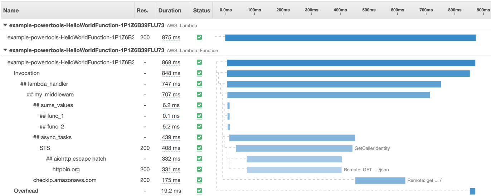

Tracer
Tracer is a thin wrapper for AWS X-Ray Python SDK.

Key features
- Enables AWS X-Ray traces for your handler by using simple and clean decorators
- Captures handler and inner functions
- Auto capture cold start as annotation, and responses or full exceptions as metadata
Usage in Handler
| my_handler.py |
|---|
1
2
3
4
5
6
7
8
9
10
11
12
13
14
15
16
17
18
19
20
21
22 | import json
from http import HTTPStatus
from typing import Any
from aws_lambda_powertools.tracing.tracer import Tracer
from aws_lambda_powertools.utilities.typing import LambdaContext
SERVICE_NAME = 'service'
# service name can be set by environment variable "POWERTOOLS_SERVICE_NAME". Disabled by setting POWERTOOLS_TRACE_DISABLED to "True"
tracer: Tracer = Tracer(service=SERVICE_NAME)
@tracer.capture_method(capture_response=False)
def inner_function_example(event: dict[str, Any]) -> dict[str, Any]:
return {}
@tracer.capture_lambda_handler(capture_response=False)
def my_handler(event: dict[str, Any], context: LambdaContext) -> dict[str, Any]:
inner_function_example(event)
return {'statusCode': HTTPStatus.OK, 'headers': {'Content-Type': 'application/json'}, 'body': json.dumps({'message': 'success'})}
|
Blog Reference
Read more about the importance of observability and traces in my blog post on observability.
More Details
You can find more information at the official documentation.
Go to https://docs.powertools.aws.dev/lambda-python/latest/core/tracer/
{kind=link}